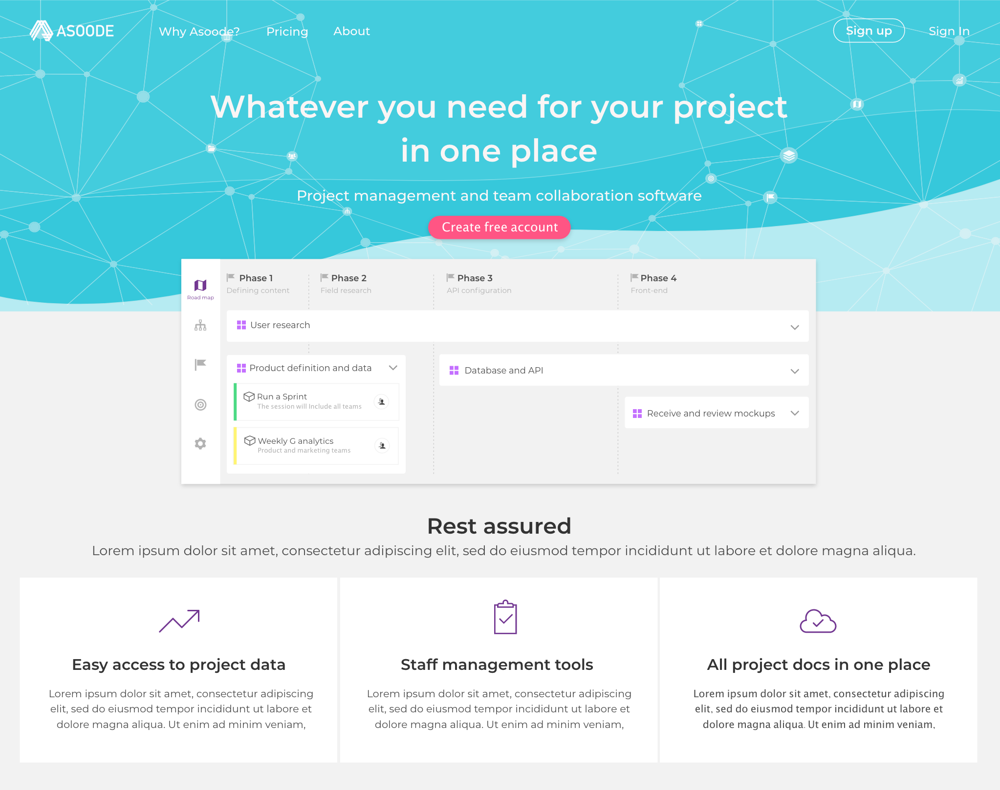
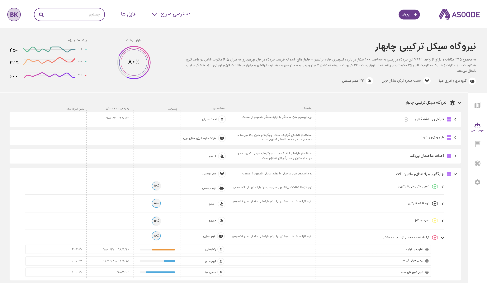
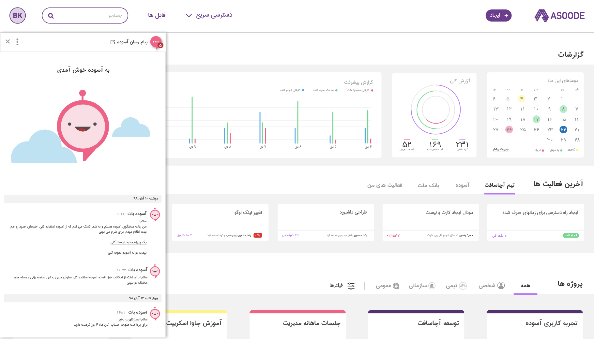
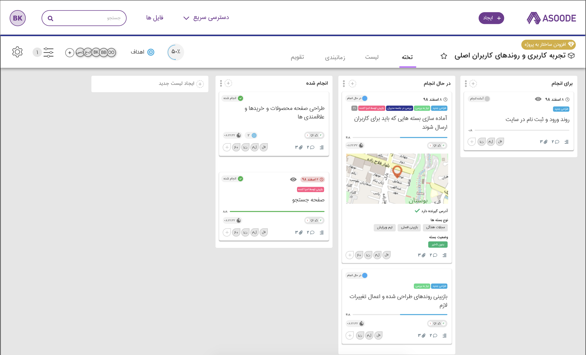
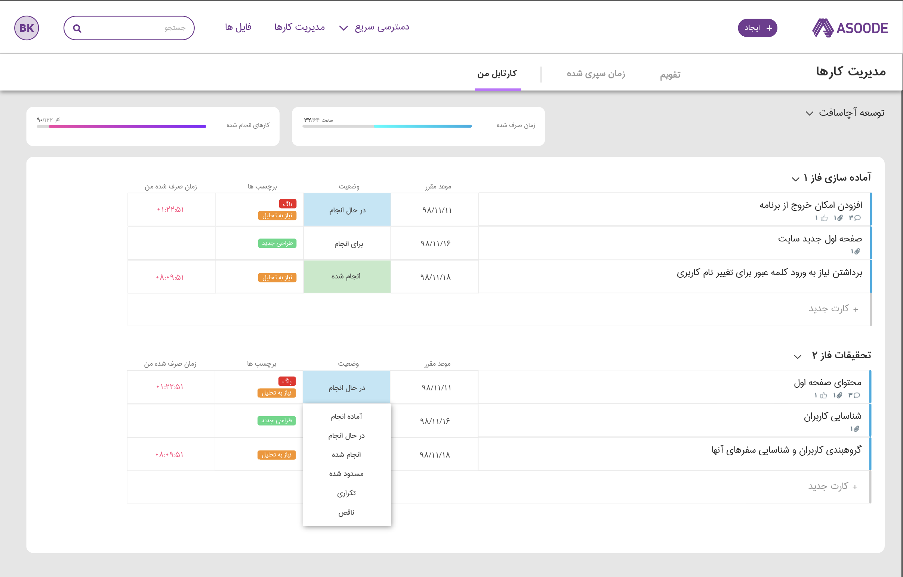
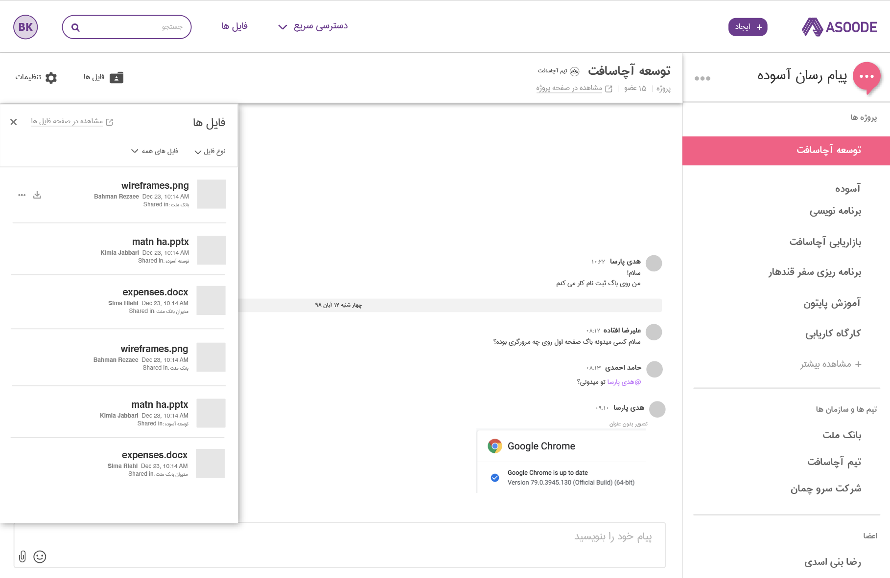
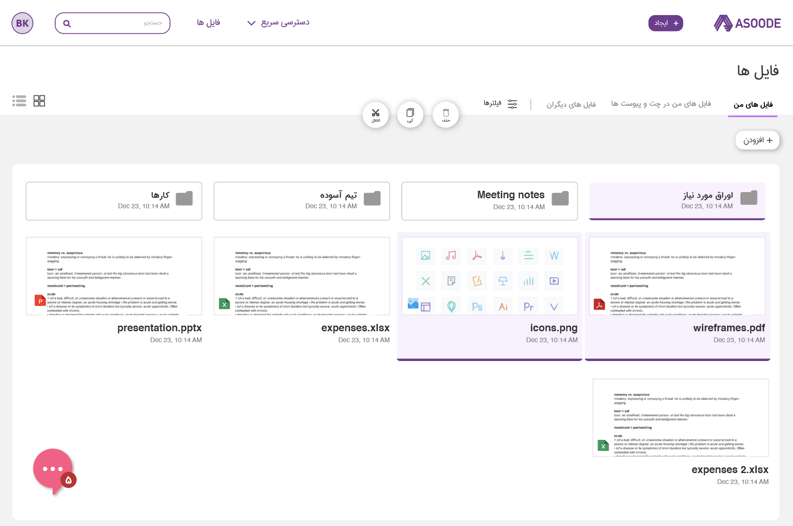

<div class="container" style="margin-top: 2rem;">
  <div class='row'>
    <div class='col-lg-12'>
      <h1>Asoode</h1>
      <p>
        Asoode is a project management and team collaboration software. Managers can break down projects, assign work, track progress and monitor payments.
      </p>
      <p>
        Teams can collaborate using the internal chat and can share and access all project files in the same place.
      </p>
      <p>
        I worked with the founder to re-design the project, define the new information architecture, user flows and UI design.
      </p>
      <h3 style="margin-top: 4rem;">Homepage</h3>
      <p>Redesigned the homepage and the other marketing pages.</p>
      <figure class="img-wrapper">
        
      </figure>
      <h3 style="margin-top: 4rem;">Project page</h3>
      <p>This is the page where the project owner breaks down the project and defines different levels, tasks and assigns them to team members.</p>
      <figure class="img-wrapper">
        
      </figure>
      <h3 style="margin-top: 4rem;">Dashboard</h3>
      <p>This is where managers and team members will see overview of project progress as well as most important tasks or issues.
      </p>
      <figure class="img-wrapper">
        
      </figure>
      <h3 style="margin-top: 4rem;">Work package page</h3>
      <p>Each project is made up of many work packages. Users can access tasks and subtasks that make up work packages on this page.</p>
      <figure class="img-wrapper">
        
      </figure>
      <h3 style="margin-top: 4rem;">My works page</h3>
      <p>This page contains tasks that are assigned to the user, their status, time spent on them and more.</p>
      <figure class="img-wrapper">
        
      </figure>
      <h3 style="margin-top: 4rem;">Chat</h3>
      <p>Chat has a page for all the different channels and it can also be accessed on every page as a widget.</p>
      <figure class="img-wrapper center">
        
      </figure>
      <figure class="img-wrapper center" style="margin-top: 2rem;>
        
      </figure>
    </div>
  </div>
</div>
